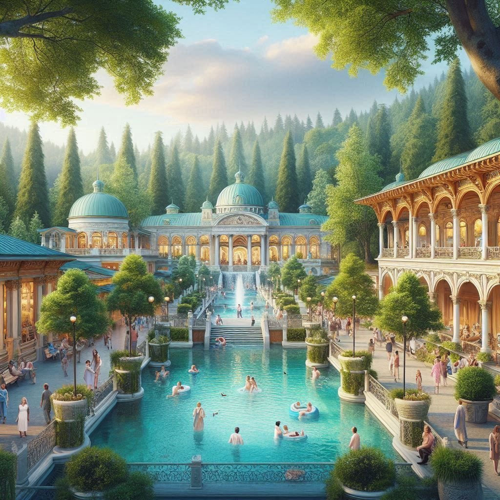
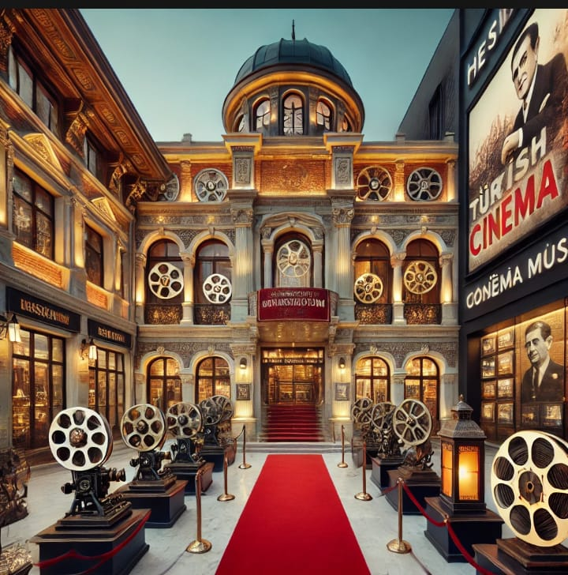
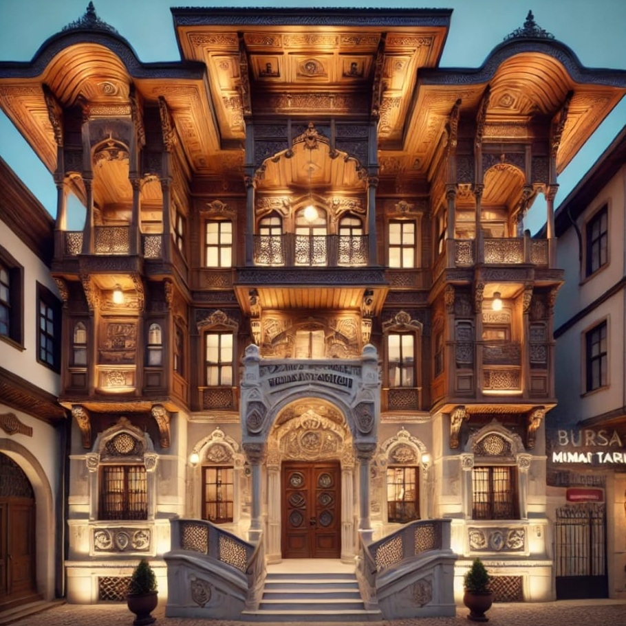
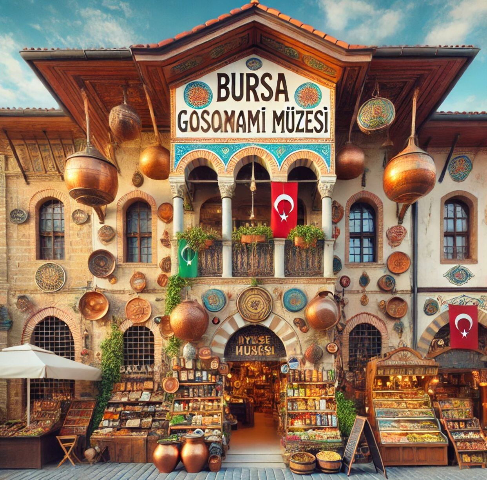
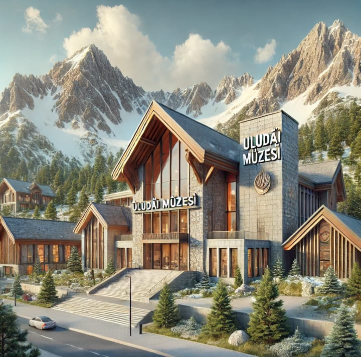
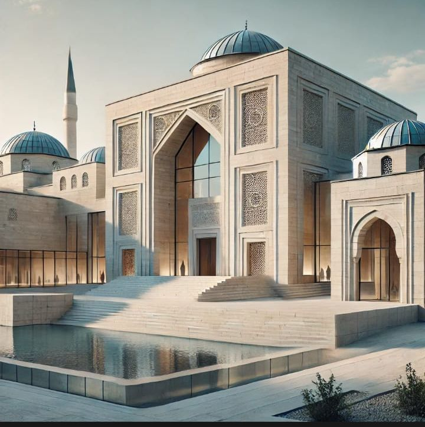
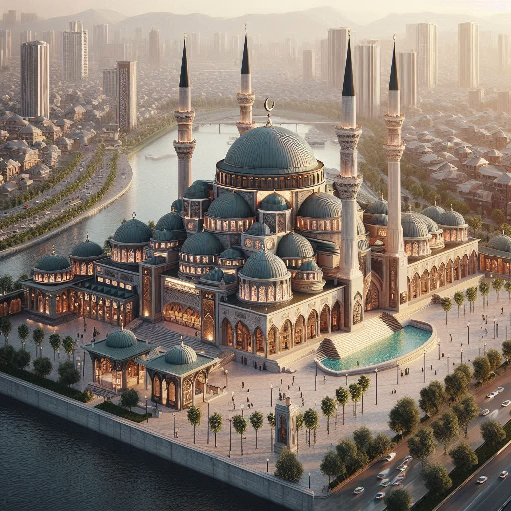
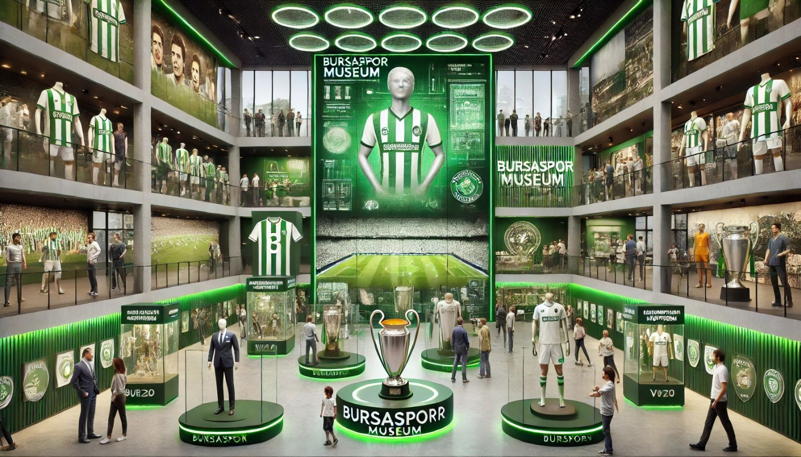
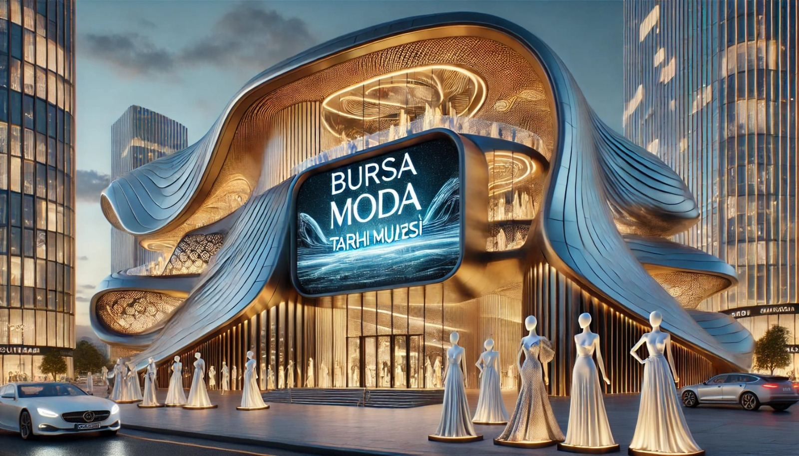

ŞEHİR VE MEDENİYET KULÜBÜMÜZ HAKKINDA
Şehir ve Medeniyet Kulübü olarak 18 öğrencimiz ve Özel 3 Mart Azizoğlu Ortaokulu Sosyal Bilgiler Öğretmenleri Can CANBOLAT ile Göktan AKDAĞ koordinatörlüğünde kadim şehir Bursa’nın tarihi, kültürel ve doğal zenginliklerini keşfetmeyi amaçlıyoruz. Kulübümüzde şehrimizin tarihsel gelişimini Tarih Öncesi Devirler’den başlayarak sırasıyla Antik Roma, Bizans, Selçuklu, Osmanlı ve Cumhuriyet’in erken dönemlerine kadar incelemekteyiz.“Bursa ve Atatürk”, “Memleketim Bursa”, “Bursa’nın Doğal ve Beşeri Güzellikleri”, “Şehrim ve Müzem” gibi temalar etrafında şehrimizin geçmişten günümüze uzanan mirasını tanıma ve yaşatma çabası içindeyiz. Bu kapsamda; Aktopraklık Arkeopark Açık Hava Müzesi, Bursa Arkeoloji Müzesi, Muradiye Külliyesi, Osman Gazi ve Orhan Gazi Türbeleri, Ulu Cami, Yeşil Külliyesi, Uludağ gibi doğal ve tarihi mekanlara geziler düzenledik.
Şehir ve Medeniyet Kulübü olarak amacımız; öğrencilerimizin yaşadıkları şehri daha yakından tanımalarını sağlamak, tarih bilinci ve kültürel farkındalık kazandırmak, akademik bilgilerin yanı sıra aynı zamanda estetik ve çevre duyarlılığı geliştirmektir.

“KAPLICA VE SAĞLIK MÜZESİ”
Bursa, yüzyıllardır sağlık turizminin önemli merkezlerinden biri olarak kaplıcalarıyla ün kazanmıştır. Bu sergide, antik dönemlerden Osmanlı'ya ve günümüze uzanan süreçte Bursa’daki kaplıcaların tarihsel gelişimi, kimyasal yapıları ve sağlık üzerindeki etkileri detaylı biçimde sunulmaktadır. Osmanlı döneminde şifa merkezi olarak hizmet veren Darüşşifalar (hastaneler) ve diğer sağlık yapıları da serginin önemli temalarındandır. Ziyaretçiler, dönemin tıbbi uygulamalarını yansıtan eski tıbbi aletler, el yazması belgeler, hasta bakımına dair maketler ve görsel materyallerle geçmişe yolculuk yapar. Ayrıca kaplıca sularında bulunan minerallerin özellikleri, bu minerallerin insan sağlığına katkıları ve tarihi dönemlerdeki tedavi biçimleri hakkında bilimsel ve kültürel bilgiler sunulur. Bu kapsamlı sergi, ziyaretçilere hem tıbbi hem de tarihi bir keşif deneyimi vadeder.

“SİNEMA MÜZESİ”
Bursa Sinema Müzesi, şehrin zengin sinema tarihini keşfetmek isteyenler için eşsiz bir deneyim sunuyor. Kentin önemli sinema salonlarının geçmişini, Bursa'da yetişen sinema sanatçılarının hayatlarına dair bilgiler, sinemaya dair arşiv fotoğrafları ve fragmanlar yer alırken, heykel bölümünde film dünyasından ilham alan sanatsal eserler de sergileniyor. Sinema ile Bursa'nın iç içe geçmiş hikayesini keşfedin ve bu kültürel zenginliğe tanıklık edin.

“MİMARLIK TARİHİ MÜZESİ”
Bursa Mimarlık Tarihi Müzesi, kentin antik çağlardan günümüze kadar olan mimari gelişimini sergileyen önemli bir kültürel merkezdir. Roma ve Osmanlı dönemine ait yapıların maketleri, Ulu Cami ve Yeşil Türbe gibi simgesel eserlerin detaylı tanıtımları ile ziyaretçilere tarihî zenginliği sunar. Dijital gösterimler, sanal gerçeklik alanları ve etkileşimli panolar sayesinde Bursa'nın mimari mirası daha yakından keşfedilebilir. Bu müze, şehrin mimari geçmişini ve benzersiz zenginliğini gözler önüne seriyor.

“GASTRONOMİ MÜZESİ”
Bursa Gastronomi Müzesi, şehrin zengin gastronomi kültürünü keşfetmek isteyenler için benzersiz bir deneyim sunuyor. İskender Kebap, Pideli Köfte, Cantık gibi meşhur lezzetlerin yanı sıra, Mihaliç Peyniri, Bursa Kestanesi ve dağ çileği gibi yöresel ürünlerin tanıtıldığı müze, Bursa'nın mutfak geçmişini gözler önüne seriyor. Osmanlı saray mutfağından gelen izler ve geleneksel konak yemekleri de müzede yer alırken, interaktif sergilerle ziyaretçiler, Bursa'nın yemek kültürünü daha yakından keşfetme fırsatı buluyor. Ayrıca, Bursa Gastronomi Festivali gibi etkinlikler de düzenlenerek müzenin sunduğu deneyime deneyim katarak katkı sağlıyor.
“DOĞAL TAŞLAR MÜZESİ”
Bursa Doğal Taşlar Müzesi, Bursa’nın tarihi dokusuyla uyumlu, doğayla iç içe bir alanda yer alıyor. Müze, yerel taşların zengin hikayesini ve jeolojik oluşumlarını modern teknolojilerle buluşturuyor. Elmas, zümrüt, safir gibi değerli taşların kristal yapıları mikroskop ve yakın plan görüntülerle keşfedilebiliyor; çeşitli ışık oyunları ile taşların parıltısı özel bir deneyim sunuyor. Müze tasarımı ise, dış cephesinde Marmara mermeri, traverten ve granit gibi doğal taşların kullanıldığı modern ve estetik bir mimariye sahip. İç mekan, geniş galeriler, dokunulabilir sergiler ve interaktif teknolojilerle desteklenirken, ses ve ışık gösterileriyle taşların görsel ve dokunsal deneyimi öne çıkarılıyor. Bu şekilde, ziyaretçiler hem yerel taşların öyküsünü hem de çağdaş sergi anlayışını iç içe yaşama fırsatı buluyor.

“ULUDAĞ MÜZESİ”
Uludağ Müzesi, Uludağ'ın eşsiz doğasını keşfetmek isteyenler için kapsamlı bir sergi alanı sunuyor. Flora ve Fauna bölümünde, dağda yetişen endemik bitki türleri ve yaşayan hayvanlar sergileniyor. Jeoloji ve Coğrafya kısmı, Uludağ’ın oluşumunu anlatan haritalar, kayaç örnekleri ve interaktif sunumlarla ziyaretçilere doğanın gücünü keşfetme fırsatı sunuyor. Tarih ve Mitoloji bölümü ise, Uludağ’ın eski adı "Olymposmisios" olan dönemine ait haritalar ve buluntuları sergiliyor. Ayrıca, Maketler bölümünde Osmanlı dönemindeki Uludağ kullanımı, avcılık hikayeleri ve tarihi belgelerle dağın geçmişi anlatılıyor. Bu müze, Uludağ'ın doğa, tarih ve kültür açısından derinlikli bir keşfini sağlıyor.

“ULUCAMİ MÜZESİ”
Bursa Ulu Cami Müzesi, caminin tarihi ve manevi atmosferini modern müzecilik anlayışıyla harmanlayarak ziyaretçilere unutulmaz bir deneyim sunuyor. Giriş bölümünde, caminin yapım süreci ve restorasyon aşamalarını anlatan tarihi fotoğraflar, el yazmaları ve dijital ekranlar yer alır. Ana sergi salonlarında, Osmanlı mimarisine ait süslemeler, taş işçiliği örnekleri ve 3 boyutlu modellemelerle ziyaretçiler, caminin zarif yapısını keşfeder. Özel sergi alanlarında ise dönemsel koleksiyonlar, restorasyon süreçleri ve konuk sanatçılara ait eserler sergilenir. Bu interaktif ve görsel zenginlik, ziyaretçilerin Ulu Camii'nin tarihini derinlemesine anlamalarını sağlar.
“SANAYİ VE TİCARET TARİHİ MÜZESİ”
Bursa Sanayi ve Ticaret Tarihi Müzesi, şehrin ekonomik geçmişini ve sanayi gelişimini keşfetmek isteyenler için etkileyici bir deneyim sunuyor. Müze, İpek Yolu üzerindeki ticaretin, Osmanlı lonca sisteminin ve ilk sanayi kuruluşlarının tarihini ele alır. Tarihi belgeler, eski makineler ve ipekçilik gibi önemli konular sergilenirken, Bursa'nın öncü girişimcilerinin hikayeleri de ziyaretçilere ilham verir. Ayrıca, Bursa'nın önemli marka ve şirketlerinin tarihçeleri de müzede yer alır. Bu sayede ziyaretçiler, Bursa'nın ticaret ve sanayi geçmişini derinlemesine keşfeder.

“OSMANLI VE BURSA MÜZESİ”
Osmanlı ve Bursa Mirası Müzesi, Osmanlı İmparatorluğu'nun ve Bursa'nın zengin tarihini ve kültürel mirasını gözler önüne seren bir deneyim sunuyor. Müze, Osmanlı dönemine ait belgeler, minyatürler, Bursa’daki önemli müzelerin maketleri ve tarihi olayları anlatan figürlerle doludur. Ayrıca, Osmanlı kültüründen ilham alan hediyelik eşyaların satıldığı bir dükkan da müzede yer almaktadır. Ziyaretçiler, Osmanlı'nın zarif sanatını ve tarihini keşfederken, şehrin kültürel mirasına dair derinlemesine bir anlayış kazanabilir.
“KIRTASIYE MÜZESİ”
Bursa Kırtasiye Müzesi, geçmişten günümüze kırtasiye eşyalarının ve tarihi objelerin izlerini takip etmek isteyenler için eşsiz bir mekandır. Bu müze, eski kalemler, defterler, mürekkep şişeleri gibi kırtasiye malzemelerini koruyarak sergilerken, aynı zamanda ünlü sanatçılara, devlet adamlarına ve tarihi figürlere ait özel eşyalar da sergilenmektedir. Ayrıca, çok eski gazeteler, dergiler, kitaplar ve resimler de müzede sergilenen diğer değerli koleksiyonlar arasında yer alır. Bu müze, kırtasiye kültürünün yanı sıra, tarihsel birikimi de gözler önüne seriyor.
“DOĞA MÜZESİ”
Bursa Doğa Müzesi, şehrin zengin doğal mirasını keşfetmek isteyenler için ilgi çekici bir koleksiyon sunuyor. Müze, Bursa'nın yer altı zenginliklerini sergileyen mineraller ve taşlar koleksiyonlarının yanı sıra, Bursa’daki fosil canlılar, bitkiler ve ormanlar ile ilgili değerli örnekler barındırır. Uludağ'ın jeolojik yapısı ve bu bölgedeki doğal süreçler de kapsamlı bir şekilde anlatılır. Ayrıca, Bursa’daki su altı canlıları ve doğal yaşam üzerine yapılan keşifler de müzede yer alır. Ziyaretçiler, doğa içerikli kafeler gibi Bursa’daki doğayla uyumlu mekanları keşfederken, doğa ve çevre kitapları ile bölgenin ekolojik zenginliğini daha yakından öğrenebilir. Bu müze, Bursa'nın hem kara hem de su altı ekosistemini bir arada sunarak, doğa ile iç içe bir keşif deneyimi sağlar.

“BURSASPOR MÜZESİ”
Bursaspor Müzesi, kulübün zengin tarihini ve futbol kültürünü derinlemesine keşfetmek isteyenler için eşsiz bir deneyim sunuyor. Müze, 1963’te kulübün kuruluş sürecini anlatan belgeler ve fotoğraflar ile başlar, ardından 2010 Süper Lig Şampiyonluğu kupası ve bu tarihi zaferin hikâyesine odaklanır. Ayrıca, Avrupa kupalarındaki maçlardan hatıralar, Türkiye Kupası ve diğer önemli kupalar sergilenmektedir. Bursaspor’un efsane futbolcularına özel köşeler, kulübün tarihindeki unutulmaz isimleri onurlandırırken, taraftar gruplarının tarihçesi ve Bursaspor tribünlerinde yaşanmış unutulmaz anlar ziyaretçilere kulübün taraftar kültürünü gösterir. 1963’ten günümüze kadar orijinal formalar ile kulübün evrimini gözler önüne seren müze, eski maçlardan görüntülerin izlenebileceği bir medya odası da sunar. Müze çıkışında ise, Bursaspor’a ait lisanslı ürünlerin satıldığı bir alan bulunur. Bu müze, kulübün tarihini yaşatırken, taraftarları ve futbolseverleri bir araya getiriyor.
“BURSA Modern Sanatlar Müzesi”
Bursa Modern Sanatlar Müzesi, şehrin tarihi ve modern yapılarından ilham alarak, Bursa'nın önde gelen çağdaş sanatçılarının eserlerini sergileyen önemli bir kültürel mekandır. Müze, çağdaş bir tasarıma sahip binasıyla dikkat çekerken, iç mekanlarında Bursa’nın geleneksel dokularından esinlenen unsurlar da yer alır. Sanatın farklı disiplinlerini kapsayan müze, resim, heykel, sinema sanatı ve dijital sanatlar gibi geniş bir yelpazede eserler sunar. Ziyaretçiler, hem geleneksel hem de modern sanat anlayışını bir arada keşfederek Bursa'nın sanat dünyasında yolculuğa çıkar.

“MODA MÜZESİ”
Bursa Moda Müzesi, şehrin moda tarihini ve kıyafetlerin gelişimini anlatan önemli bir koleksiyon sunuyor. Müze, Bursa'nın geleneksel kıyafetlerini sergileyen eserlerle başlayarak, modern moda tasarımlarını da içeren geniş bir koleksiyon barındırır. Ziyaretçiler, tarihsel kıyafetlerin izlerini takip ederek şehrin moda mirasını keşfedebilir. Ayrıca, Bursa'nın önde gelen modacıları ve设计师leriyle ilgili özel sergiler de müzede yer alır. Bu müze, hem geleneksel hem de modern moda anlayışını bir arada sunarak, ziyaretçilere Bursa'nın moda dünyasında yolculuğa çıkarır.